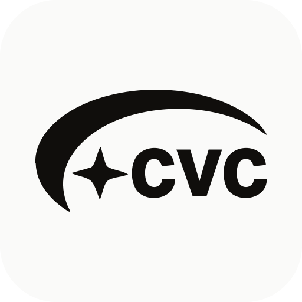
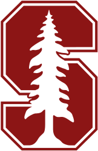

Work
Clean energy, venture and research. Every row links to the organization.
0students mobilized by Electric-First campaigns
0CO₂ cut per year (est.)
0EV fleet-charging sites scored
0electrification grant managed ($)
0K–8 students taught
0Faradaic efficiency in my MOF research
At Cornell
- Cornell University↗B.S. Environmental EngineeringIthaca, NY. Coursework and certificates in quantitative modeling (Wharton) and modelling and measuring the energy transition (Politecnico di Milano).2026 — 2030

Cornell Venture Capital↗New Member Education · Fall ’26 classWorking alongside the club’s VCs on sourcing and diligence, and on the deal team for Cognition AI. Writing investment theses on seed and Series A AI-infrastructure startups, including Hatchet, Atomic, Frenos, ZeroDrift and Build.2026 — now Energy Transition Club↗MemberUndergraduate organization preparing members to lead in the energy transition through New Member Education, analytical project teams (energy storage, grid modernization, carbon capture, climate policy and more), site visits and speaker sessions.2026 — now
Energy Transition Club↗MemberUndergraduate organization preparing members to lead in the energy transition through New Member Education, analytical project teams (energy storage, grid modernization, carbon capture, climate policy and more), site visits and speaker sessions.2026 — now
Experience
 PlateTale↗Operations & Growth InternHelped take an AI food-tech startup from 0 to 1 by building chef and customer partnerships, reaching out to 100+ prospective customers and VC-backed startups, and refining its AI taste model. Secured 3 VC sponsors and hosted the flagship dinner club, convening 20 founders from Stanford, Berkeley, MIT and YC-backed companies.Jun — Aug 2026
PlateTale↗Operations & Growth InternHelped take an AI food-tech startup from 0 to 1 by building chef and customer partnerships, reaching out to 100+ prospective customers and VC-backed startups, and refining its AI taste model. Secured 3 VC sponsors and hosted the flagship dinner club, convening 20 founders from Stanford, Berkeley, MIT and YC-backed companies.Jun — Aug 2026 WestLight Energy↗Clean Energy Advisor · former internManage a $50K electrification grant, mentor interns and expand K–12 outreach to 360+ students across the Peninsula. Co-led Electric-First campaigns that passed clean-energy resolutions in 4 school districts, mobilizing 9,000+ students and cutting an estimated 2M+ kg of CO₂ a year. Represented Peninsula Clean Energy at regional energy events and guest-spoke to 400+ students.Mar 2025 — now
WestLight Energy↗Clean Energy Advisor · former internManage a $50K electrification grant, mentor interns and expand K–12 outreach to 360+ students across the Peninsula. Co-led Electric-First campaigns that passed clean-energy resolutions in 4 school districts, mobilizing 9,000+ students and cutting an estimated 2M+ kg of CO₂ a year. Represented Peninsula Clean Energy at regional energy events and guest-spoke to 400+ students.Mar 2025 — now- SMShields Mobility↗Research AnalystSourced and scored 300+ EV commercial-fleet charging sites across California, identifying high-potential acquisitions and tracking incentive programs to steer investment toward underserved infrastructure. Built an ArcGIS site to visualize and sort properties.Jun 2025 — Apr 2026
 RE-volv↗AnalystBuilt and pitched a solar financing proposal for a church, modeling 30%+ federal incentives, 20-year project economics and projected energy savings. Collaborated with Peninsula Clean Energy to expand nonprofit solar across the Bay Area.Apr 2025 — Mar 2026
RE-volv↗AnalystBuilt and pitched a solar financing proposal for a church, modeling 30%+ federal incentives, 20-year project economics and projected energy savings. Collaborated with Peninsula Clean Energy to expand nonprofit solar across the Bay Area.Apr 2025 — Mar 2026
Stanford University · Chemistry↗Research InternAssisted graduate-student projects in computational molecular physics and energy storage in the Waymouth and Rotskoff labs.Jun — Jul 2025 Elytra Robotics↗Market ResearcherMerged 2 public datasets and used spatial clustering and predictive modeling to map trash hot spots for autonomous waste collection. Supported Elytra, a 10-person robotics-infrastructure startup later acquired by a hardware company serving Generalist and Dyna.Feb — Aug 2025
Elytra Robotics↗Market ResearcherMerged 2 public datasets and used spatial clustering and predictive modeling to map trash hot spots for autonomous waste collection. Supported Elytra, a 10-person robotics-infrastructure startup later acquired by a hardware company serving Generalist and Dyna.Feb — Aug 2025
Research & school
- IRIndependent research↗Sustainability & materials scienceSimulated copper–MOF catalytic pathways that turn vehicle CO₂ into ethanol, reaching 91% Faradaic efficiency, and published a paper with mentors from MIT, Stanford and Washington State. Prototyped an LTC3108-based air conditioner that cools without refrigerants. Presented at ICAE (UN Bangkok), Columbia Junior Science Journal, MIT THINK, JSHS and the California Science & Engineering Fair.2022 — 2026
 Crystal Springs Uplands School↗High school · 4.12 GPADistinguished Award in Science. President of STEM Invention Studio: mentored 20+ members, grew membership 50% and ran a research symposium with 15 guest judges. Elected to Student Government for 6 years, including Co-President; led 30+ events, from a $50K prom to Social Justice Week.2019 — 2026
Crystal Springs Uplands School↗High school · 4.12 GPADistinguished Award in Science. President of STEM Invention Studio: mentored 20+ members, grew membership 50% and ran a research symposium with 15 guest judges. Elected to Student Government for 6 years, including Co-President; led 30+ events, from a $50K prom to Social Justice Week.2019 — 2026